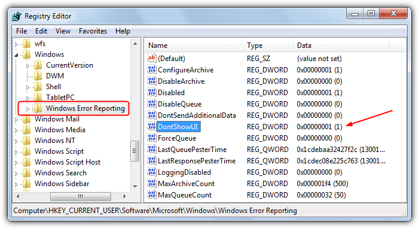

Disable "stopped working " dialog after crash
Turn off the Error Dialog Via the Registry
Although editing the registry manually is not recommended for average users, sometimes there isn’t a choice because something like the Group policy Editor might not be available in your version of Windows or the group policy method itself doesn’t work. This works on Windows Vista and above.
1. Open the Registry Editor by typing regedit into the Start search box or the Win+R Run dialog.
2. Navigate to the following registry key:
HKEY_CURRENT_USER\Software\Microsoft\Windows\Windows Error Reporting
3. Double click the DontShowUI entry on the right and change its value to 1, then close the registry editor.
